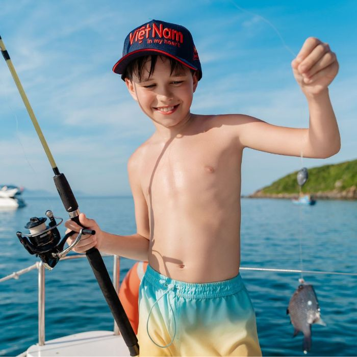

Впервые отправляясь на яхту, люди обычно берут слишком много. Сумка полотенец, сумка снеков, колонка, надувной круг… а потом оказывается, что на борту почти всё есть. Эта статья делит багаж на две понятные колонки: что Theia Yachting включает в пакет и что остаётся за вами.
Уже есть на борту: не берите лишнего
Согласно FAQ Theia, в большинство аренд входит:
- Трансфер из отеля до марины и обратно
- Капитан и команда
- Приветственные напитки, еда и напитки, свежие сезонные фрукты
- Пляжные полотенца — да, полотенце брать не нужно
- Снаряжение для снорклинга, SUP-борды, снасти для рыбалки
У каждой яхты есть небольшие отличия — это стоит прочитать внимательно. Например, у скоростной яхты Titan прямо указаны спасательные жилеты, пресный душ и салон с кондиционером, но в списке включённого у Titan нет трансфера — спросите нас, если выбираете эту яхту. У Onyx дополнительно водные велосипеды, надувная горка, бесплатный Wi-Fi и зона барбекю. На Azure — личный шеф-повар, пиво и безалкогольные напитки.

Ваша часть: чек-лист из 10 пунктов
Примечание: это общие советы для морских прогулок, а не правила Theia.
- Солнцезащитный крем — лучше с пометкой «reef-safe», чтобы не вредить кораллам, когда вы в воде.
- Шляпа с широкими полями и очки на шнурке — ветер на палубе сильнее, чем кажется.
- Лёгкая кофта — особенно на Sunset 15:00–20:00, когда после заката морской бриз становится прохладным.
- Купальник сразу под одеждой — меньше времени на переодевание, когда яхта встанет на якорь.
- Сухой комплект одежды, чтобы переодеться к ужину или на обратный путь.
- Водонепроницаемый чехол для телефона — самая дешёвая вещь, которая спасает самую дорогую.
- Мягкие сандалии или босиком — палуба не место для каблуков.
- Таблетки от укачивания, если вас укачивает в транспорте; принимайте до выхода по инструкции.
- Пауэрбанк — фото будет больше, чем планировали.
- Документы возьмите с собой на причал; спросите нас, если в марине особые требования.
Лучший багаж для дня в море — тот, о котором вы забываете.
Если у вас особый повод
День рождения, годовщина, предложение, корпоратив — сообщите до бронирования. По словам Theia, на Princess 56 – Diamond и Princess V40 – Pearl есть индивидуальное меню еды и напитков; на Coral II и Onyx — фейерверк в вечерний тур. Декор, торт, фотограф — мы уточним у Theia и заранее назовём понятную стоимость.

Три вопроса перед внесением депозита
- Где именно и во сколько вас заберут?
- Если будет плохая погода, какие условия переноса/возврата? (Theia не публикует подробности на сайте — мы получим для вас условия письменно.)
- Какие активности включены, а какие платные (гидроцикл, дайвинг, «банан»…)?
Источники: FAQ и страницы яхт Theia Yachting (theiayachting.com/vi), дата обращения 20.11.2026. Личный чек-лист — общие рекомендации.